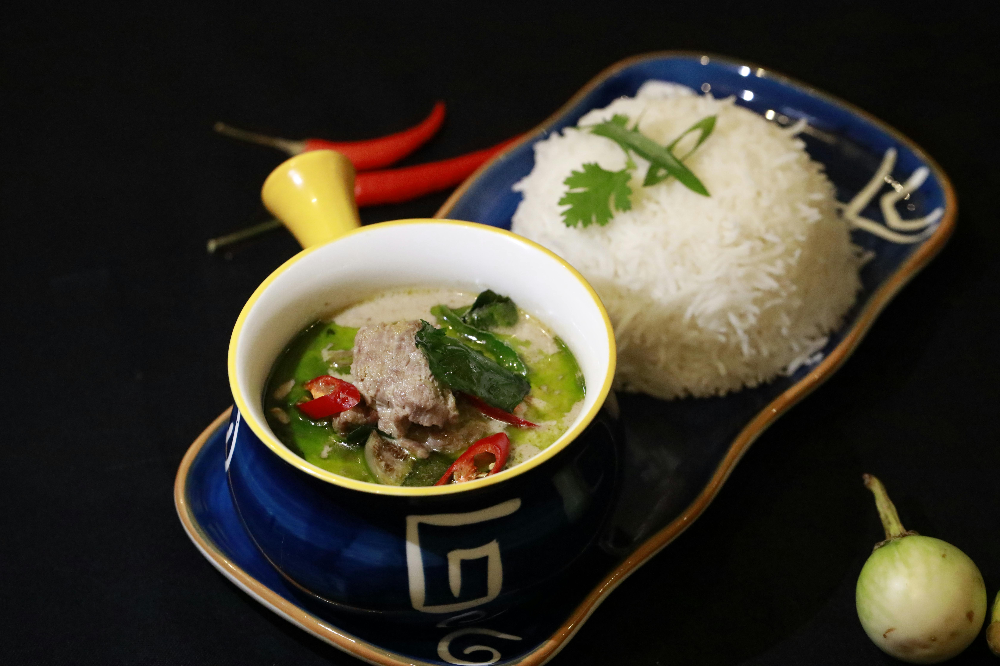

Prep Time
30 mins
Cook Time
25 mins
Total Time
55 mins
Serves
4-6 people
Ingredients
For the Curry Paste (or use 4-5 tbsp store-bought):
- 15 green Thai chilies, deseeded
- 2 shallots, roughly chopped
- 4 cloves garlic
- 2 stalks lemongrass, tender parts only
- 1 thumb-sized piece galangal
- 1 bunch coriander/cilantro roots and stems
- 1 lime, zest only
- 1 tsp cumin seeds
- 1 tsp coriander seeds
- 1 tsp white peppercorns
- 1 tsp shrimp paste (omit for vegetarian version)
For the Curry:
- 2 cans (400ml each) coconut milk
- 2 tbsp vegetable oil
- 500g chicken, tofu, or mixed vegetables
- 2 tbsp palm sugar (or brown sugar)
- 3 tbsp fish sauce (or soy sauce for vegetarian version)
- 4-5 kaffir lime leaves
- 1 cup Thai basil leaves
- 2 Japanese eggplants, cut into chunks
- 1 cup bamboo shoots
- 2-3 bird's eye chilies (optional)
Instructions
- If making curry paste from scratch, toast cumin and coriander seeds in a dry pan until fragrant. Grind together with white peppercorns.
- In a food processor or mortar and pestle, pound all curry paste ingredients together until a fine paste forms.
- In a large wok or pot, heat vegetable oil over medium heat. Add 4-5 tablespoons of curry paste and fry until fragrant, about 2-3 minutes.
- Add 1 cup of coconut milk (the thick part from the top of the can). Cook until oil separates and the mixture becomes fragrant, about 5 minutes.
- Add your choice of protein (chicken, tofu, etc.) and cook until nearly done.
- Pour in remaining coconut milk, palm sugar, and fish sauce. Add kaffir lime leaves.
- Add eggplants and bamboo shoots. Simmer for 10-15 minutes until vegetables are tender.
- Taste and adjust seasoning with more fish sauce or palm sugar if needed.
- Turn off heat and stir in Thai basil leaves.
- Serve hot with jasmine rice, garnished with extra Thai basil and sliced chilies if desired.
Tips:
- For the best flavor, use full-fat coconut milk and avoid shaking the can before opening.
- Adjust the amount of curry paste based on your spice preference.
- If using store-bought paste, Thai brands like Mae Ploy or Maesri are recommended.